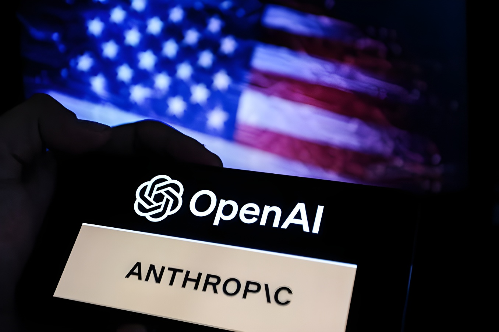

Dans la nuit du 8 au 9 septembre 2026, Jacob Coxon, 27 ans, chercheur britannique spécialisé dans le pré-entraînement des modèles, annonce sur X sa démission d'Anthropic et son départ de l'industrie de l'intelligence artificielle. Dans un fil de sept messages, il accuse OpenAI et Anthropic, où il a travaillé successivement, de foncer vers une « superintelligence » capable de s'améliorer elle-même sans avoir résolu les problèmes de sécurité fondamentaux. Quelques heures plus tard, Evan Hubinger, responsable de la recherche sur l'alignement chez Anthropic, lui répond publiquement qu'il partage ce diagnostic — sans pour autant quitter l'entreprise. L'échange, devenu viral, relance en quelques jours le débat sur la course mondiale à l'IA et sur la manière dont les laboratoires eux-mêmes évaluent le risque qu'ils font courir à l'humanité.
Jusqu'à cette semaine, Jacob Coxon n'était connu que d'un cercle restreint de spécialistes. Ce Britannique de 27 ans, présenté par plusieurs médias comme diplômé en mathématiques de l'université de Cambridge, avait rejoint OpenAI en 2023 pour y travailler sur le pré-entraînement des grands modèles de langage, l'étape où ceux-ci acquièrent l'essentiel de leurs capacités. La presse lui attribue une contribution à la fiche technique de GPT-4o. En juillet 2026, il quitte OpenAI pour rejoindre Anthropic, entreprise qu'il jugeait alors plus prudente en matière de sécurité, où il poursuit le même type de recherche.
C'est cette double expérience qui donne du poids à son message. Dans la nuit du 8 au 9 septembre 2026, sur son compte X encore quasiment anonyme (@hilbertspaess), il publie un fil de sept messages annonçant sa démission d'Anthropic et son départ complet de l'industrie de l'IA. « Aucune des deux entreprises n'agit de façon responsable, écrit-il. Elles foncent droit vers une superintelligence capable de s'améliorer elle-même, et jouent avec nos vies. » Il précise ensuite sa pensée : chez OpenAI, selon lui, une partie des équipes n'aurait pas pleinement intégré l'ampleur des enjeux ; chez Anthropic, les risques seraient bien compris en interne, mais l'entreprise resterait engagée dans une course pour devancer ses concurrents, convaincue que personne d'autre n'agira de façon plus responsable qu'elle.
L'épisode Coxon n'est pas le premier du genre. En mai 2024 déjà, plusieurs chercheurs de l'équipe chargée de l'alignement à long terme chez OpenAI, dont Jan Leike, avaient démissionné en dénonçant une culture de la sécurité passée au second plan derrière la course aux produits. Ce qui distingue la sortie de Jacob Coxon, c'est sa viralité immédiate et surtout la réaction d'un responsable toujours en poste : en confirmant publiquement le diagnostic de son ancien collègue sans démissionner lui-même, Evan Hubinger a rendu visible un écart, déjà pressenti par les observateurs du secteur, entre les inquiétudes exprimées en privé par certains chercheurs et le discours plus rassurant tenu publiquement par les entreprises.
Jacob Coxon rejoint OpenAI comme chercheur en pré-entraînement ; la presse lui attribue une contribution à la fiche technique de GPT-4o.
Il quitte OpenAI pour rejoindre Anthropic, jugée à l'époque plus prudente sur les questions de sécurité.
Il publie sur X un fil de sept messages annonçant sa démission d'Anthropic et son départ de l'industrie de l'IA.
Evan Hubinger, responsable de la recherche sur l'alignement chez Anthropic, répond publiquement et confirme partager son diagnostic sur le risque.
L'affaire est reprise par la presse internationale (Time, Wall Street Journal, Axios, BBC) puis française (France Info, Le Figaro, La Libre), avec des lectures contrastées.
La réponse la plus commentée de la séquence ne vient pas d'un communiqué de presse, mais d'un message posté sur X quelques heures après le fil de Jacob Coxon. Evan Hubinger, qui dirige les travaux d'Anthropic sur l'alignement des modèles, y écrit que son ancien collègue a raison, tout en précisant qu'il reste à son poste car il estime l'entreprise sincèrement engagée à limiter ce risque, même en l'absence, à ce jour, d'une méthode éprouvée pour aligner une éventuelle superintelligence.
« Jacob a raison : nous croyons vraiment que l'IA pourrait tuer tous les humains ! Je pense personnellement que ce risque dépasse 10 % sur la décennie à venir. »
— Evan Hubinger, responsable de la recherche sur l'alignement chez Anthropic, réponse publiée sur X (9 septembre 2026)Coxon, de son côté, se défend de tout coup de communication : il assure que les cadres et chercheurs des grands laboratoires expriment en privé des craintes qu'ils atténuent volontiers devant la presse. Il ne réclame pas l'arrêt immédiat des recherches, mais appelle les chercheurs encore en poste à s'interroger sur les conditions dans lesquelles ils continuent de travailler, et plaide pour des mesures contraignantes, y compris un éventuel moratoire temporaire sur l'amélioration des capacités des modèles les plus avancés. Anthropic, de son côté, n'a publié à ce jour aucune prise de position officielle distincte de celle, personnelle, d'Evan Hubinger.
| Laboratoire | Perception du risque selon Coxon | Comportement reproché |
|---|---|---|
| OpenAI | Enjeu pas pleinement intégré selon lui | Poursuite du développement sans rupture visible |
| Anthropic | Enjeu bien compris en interne | Course engagée pour devancer les concurrents |
Ce que révèle surtout l'épisode Coxon, ce n'est pas une découverte technique nouvelle : c'est la parole publique, rare, d'un responsable toujours en poste confirmant qu'un risque existentiel est pris au sérieux en interne, sans qu'aucun des deux laboratoires ne change pour autant de trajectoire. Le témoignage de Jacob Coxon reste une conviction personnelle, fondée sur son expérience de trois années, et non une démonstration scientifique du danger qu'il décrit. Il relance néanmoins, avec une intensité inédite, une question que les gouvernements peinent encore à trancher : qui doit décider du rythme et des limites d'une technologie que ses propres artisans disent redouter ?